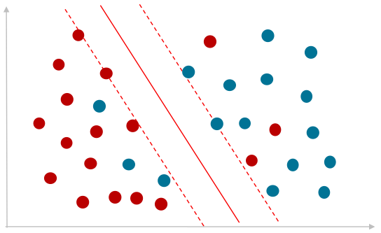

# Data Handling and Manipulation
import pandas as pd
import numpy as np
# Data Preprocessing
from sklearn.preprocessing import StandardScaler, OneHotEncoder, PolynomialFeatures
from sklearn.compose import ColumnTransformer
from sklearn.pipeline import Pipeline
# Model Selection and Evaluation
from sklearn.model_selection import train_test_split, GridSearchCV, RandomizedSearchCV
from sklearn.metrics import classification_report, confusion_matrix, mean_squared_error, r2_score
# Machine Learning Models
from sklearn.svm import SVC # Support Vector Classifier for classification tasks
from sklearn.svm import SVR
from sklearn.linear_model import LinearRegression # For polynomial regression
# Data Visualization
import matplotlib.pyplot as plt
import seaborn as sns
# Additional Tools
from skopt.plots import plot_convergence, plot_objective, plot_evaluations
from sklearn.metrics import accuracy_score, make_scorer
# Set the default style for visualization
sns.set_theme(style = "white", palette = "colorblind")
# Increase font size of all Seaborn plot elements
sns.set(font_scale = 1.25)Support Vector Machines (SVMs)
Data Mining and Discovery
Setup
A short lesson in Linear Algebra
Just kidding… too complicated…
But see the free deeplearning.ai course on Mathematics for Data Science and Machine Learning.
Support Vector Machines (SVMs)
Question:
Does mentioning special skills, computer skills, and the presence of honors in a resume increase the likelihood of receiving a call-back for a job interview, and how does this effect vary by gender and race?
Our data: Labor market discrimination
laborDiscrim = pd.read_csv("data/labor_market_discrimination.csv", encoding = 'iso-8859-1')[["education", "special_skills", "computer_skills", "honors", "sex", "race", "call"]]
laborDiscrim.head()| education | special_skills | computer_skills | honors | sex | race | call | |
|---|---|---|---|---|---|---|---|
| 0 | 4 | 0 | 1 | 0 | f | w | 0 |
| 1 | 3 | 0 | 1 | 0 | f | w | 0 |
| 2 | 4 | 0 | 1 | 0 | f | b | 0 |
| 3 | 3 | 1 | 1 | 0 | f | b | 0 |
| 4 | 3 | 0 | 1 | 0 | f | w | 0 |
| variable | class | description |
|---|---|---|
education |
int | Level of education: 0 = not reported; 1 = high school diploma; 2 = high school graduate; 3 = some college; 4 = college or more |
special_skills |
int / boolean | Whether they mentioned special skills |
computer_skills |
int / boolean | Whether they mentioned computer skills |
honors |
int / boolean | Whether they mentioned some honors |
sex |
object | Applicant’s gender |
race |
object | Applicant’s race |
call |
int / boolean | Whether they received a call back |
<class 'pandas.core.frame.DataFrame'>
RangeIndex: 4870 entries, 0 to 4869
Data columns (total 7 columns):
# Column Non-Null Count Dtype
--- ------ -------------- -----
0 education 4870 non-null int64
1 special_skills 4870 non-null int64
2 computer_skills 4870 non-null int64
3 honors 4870 non-null int64
4 sex 4870 non-null object
5 race 4870 non-null object
6 call 4870 non-null int64
dtypes: int64(5), object(2)
memory usage: 266.5+ KBCode
# Select categorical columns
categorical_cols = laborDiscrim.columns
# Initialize a dictionary to store results
category_analysis = {}
# Loop through each categorical column
for col in categorical_cols:
counts = laborDiscrim[col].value_counts()
proportions = laborDiscrim[col].value_counts(normalize=True)
unique_levels = laborDiscrim[col].unique()
# Store results in dictionary
category_analysis[col] = {
'Unique Levels': unique_levels,
'Counts': counts,
'Proportions': proportions
}
# Print results
for col, data in category_analysis.items():
print(f"Analysis for {col}:\n")
print("Unique Levels:", data['Unique Levels'])
print("\nCounts:\n", data['Counts'])
print("\nProportions:\n", data['Proportions'])
print("\n" + "-"*50 + "\n")Analysis for education:
Unique Levels: [4 3 1 2 0]
Counts:
education
4 3504
3 1006
2 274
0 46
1 40
Name: count, dtype: int64
Proportions:
education
4 0.719507
3 0.206571
2 0.056263
0 0.009446
1 0.008214
Name: proportion, dtype: float64
--------------------------------------------------
Analysis for special_skills:
Unique Levels: [0 1]
Counts:
special_skills
0 3269
1 1601
Name: count, dtype: int64
Proportions:
special_skills
0 0.671253
1 0.328747
Name: proportion, dtype: float64
--------------------------------------------------
Analysis for computer_skills:
Unique Levels: [1 0]
Counts:
computer_skills
1 3996
0 874
Name: count, dtype: int64
Proportions:
computer_skills
1 0.820534
0 0.179466
Name: proportion, dtype: float64
--------------------------------------------------
Analysis for honors:
Unique Levels: [0 1]
Counts:
honors
0 4613
1 257
Name: count, dtype: int64
Proportions:
honors
0 0.947228
1 0.052772
Name: proportion, dtype: float64
--------------------------------------------------
Analysis for sex:
Unique Levels: ['f' 'm']
Counts:
sex
f 3746
m 1124
Name: count, dtype: int64
Proportions:
sex
f 0.769199
m 0.230801
Name: proportion, dtype: float64
--------------------------------------------------
Analysis for race:
Unique Levels: ['w' 'b']
Counts:
race
w 2435
b 2435
Name: count, dtype: int64
Proportions:
race
w 0.5
b 0.5
Name: proportion, dtype: float64
--------------------------------------------------
Analysis for call:
Unique Levels: [0 1]
Counts:
call
0 4478
1 392
Name: count, dtype: int64
Proportions:
call
0 0.919507
1 0.080493
Name: proportion, dtype: float64
--------------------------------------------------
Support Vector Machines
SVMs are a set of supervised learning methods used for classification, regression, and outliers detection. The objective of the SVM algorithm is to find a hyperplane in an N-dimensional space (N — the number of features) that distinctly classifies the data points.
Maximum margin classifier
Fundamental Concept: A linear classifier aiming to find a hyperplane that separates classes with the maximum margin, enhancing generalization.
Hyperplane Definition: An \(n−1\)-dimensional decision boundary in \(n\)-dimensional space, critical for class separation.
Margin Maximization: Focuses on creating the widest possible “street” between classes, determined by the closest data points, known as support vectors.
Linear Separability Assumption: Assumes data can be perfectly divided into two classes with a straight line (or hyperplane in higher dimensions).
Robustness and Overfitting: Aims to improve model’s robustness to overfitting by maximizing the margin, effective in truly linearly separable and low-noise scenarios.
Optimization Challenge: Involves solving a quadratic optimization problem to find the hyperplane, which can be computationally intensive.
Limitations: Not directly applicable to non-linearly separable data without modifications, such as using slack variables or kernel methods.
Evolutionary Significance: Serves as a foundation for more sophisticated SVM techniques, addressing limitations like non-linear separability and data overlap.
Classification using a hyperplane
Hyperplanes serve as decision boundaries in SVMs. The goal is to find the hyperplane that maximally separates different classes with the largest margin.
\(w^{T}x + b\)
Where:
\(w\) is the weight vector
\(x\) is the input feature vector
\(b\) is the bias
The objective is to classify data points into two classes based on which side of the hyperplane they fall.
If \(w^{T}x + b > 0\), the data point is classified into one class
If \(w^{T}x + b < 0\)it is classified into the other class
Constructing the marginal classifier
Goal: Construct a hyperplane that maximizes the margin between classes, creating optimal separation with a buffer zone around the hyperplane that’s free of data.
Given the hyperplane function: \(w^{T}x + b\)
Objective Function: Maximize the margin \(M\) subject to the constraints that all data points are classified correctly, formulated as:
\(\max_{w, b} \; M = \frac{1}{\|w\|}\)
Subject to \(y_i(w^{T}x + b) \geq 1\) for all \(i\), where \(y_i\) are class labels (\(+1\) or \(-1\))
Margin & Support Vectors
- Distance between hyperplane and nearest points (support vectors) enhances generalization.
Linear Separability
- Assumes perfect separation by a hyperplane; real data may need soft margins or kernels.
Geometric Interpretation
- A line (2D) or plane (higher dimensions) divides feature space, crucial for accuracy.
Computational Aspects
- Finding optimal hyperplane involves quadratic programming to maximize margin.
The non-separable case
When data cannot be perfectly divided by a linear boundary, SVMs adapt using soft margins and the kernel trick to handle overlaps and complex patterns.

Definition: Extends SVM to allow some misclassifications, enhancing flexibility for non-linearly separable data.
Formula: minimize \(\frac{1}{2}\|w\|^2 + C\sum_{i=1}^{n}\xi_i\)
Where:
\(\xi_i\) are slack variables indicating misclassification degree
\(C\) is the regularization parameter
Key points:
Slack variables permit data points to be on the wrong side of the margin.
\(C\) balances margin width and misclassification penalty, crucial for model performance.
Definition: Transforms data into a higher-dimensional space to find a separable hyperplane, enabling non-linear classification.
Formula: Uses kernel functions like RBF (\(\exp(-\gamma\|x-x'\|^2)\)), Polynomial (\(x \cdot x')^d\)), or Sigmoid (\(\tanh(\alpha x \cdot x' + r)\)).
Key Points:
Allows complex decision boundaries without explicitly computing high-dimensional transformations.
Selection of kernel and its parameters (\(d\), \(\gamma\) etc.) is vital for capturing data structure.
Handling Non-separable Data
Soft Margins: Introduce flexibility by penalizing misclassifications to a degree controlled by \(C\).
Kernel-Based Mapping: Facilitates classification in cases where linear separation is not feasible in the original feature space.
Parameter Tuning: Critical for optimizing the trade-off between model complexity and generalization ability, often achieved through cross-validation.
Support vector machines - revisited
SVMs adapt the Maximal Margin Classifier for linearly non-separable data using slack variables and kernel functions, focusing on soft margin classification for linear data and the kernel trick for non-linear cases.
Objective Function: Minimize the following objective to find the optimal hyperplane
\(\min_{w, b, \xi} \; \frac{1}{2}\|w\|^2 + C\sum_{i=1}^{n}\xi_i\)
Subject to \(y_i(w^{T}x + b) \geq 1 - \xi_i\) for all \(i\), where:
\(w\) is the weight factor
\(b\) is the bias
\(\xi_i\) are slack variables representing the degree of misclassification of \(x_i\)
\(C\) is the is the regularization parameter controlling the trade-off between margin maximization and classification error.
Dual Problem Solution: The SVM optimization problem in its dual form allows the incorporation of kernel functions:
\(\max_{\alpha} \; \sum_{i=1}^{n}\alpha_i - \frac{1}{2}\sum_{i,j=1}^{n}\alpha_i \alpha_j y_i y_j K(x_i, x_j)\)
Subject to \(0 \leq \alpha_1 \leq C\) for all \(i\) and \(\sum_{i=1}^{n}\alpha_iy_i = 0\), where:
\(\alpha_i\) Lagrange multipliers
\(K(x_i, x_j)\) is the kernel function evaluating the dot product of \(x_i\) and \(x_j\) in the transformed feature space.
Slack Variables \(\xi_i\): Allow for flexibility in classification by permitting data points to be within the margin or incorrectly classified, i.e., the soft margin approach.
Regularization Parameter (\(C\)) : Balances the trade-off between achieving a wide margin and minimizing the classification error; higher \(C\) values lead to less tolerance for misclassification.
Kernel Functions: Transform the original feature space into a higher-dimensional space, enabling SVMs to find a separating hyperplane in cases where data is not linearly separable. Common kernels include linear, polynomial, RBF, and sigmoid.
Dual Formulation: Simplifies the problem by focusing on Lagrange multipliers, allowing the use of kernel functions and making the problem solvable even when the feature space is high-dimensional or infinite.
Support Vectors: Data points corresponding to non-zero \(\alpha_i\) values; these are the critical elements that define the hyperplane and margin.
Decision Function: For a new data point \(x\), the decision function becomes \(\text{sign}\left(\sum_{i=1}^{n} \alpha_i y_i K(x_i, x) + b\right)\), determining the class membership based on the sign of the output.
Back to our data - preprocessing
# Selecting columns
X = laborDiscrim[['education', 'special_skills', 'computer_skills', 'honors', 'sex', 'race']]
y = laborDiscrim['call']
# Define categorical and numerical features
categorical_features = ['sex', 'race'] # Add other categorical feature names as needed
numerical_features = ['education', 'special_skills', 'computer_skills', 'honors'] # Add other numerical feature names as needed
# Create transformers for preprocessing
categorical_transformer = Pipeline(steps=[
('onehot', OneHotEncoder(handle_unknown='ignore'))
])
numerical_transformer = Pipeline(steps=[
('scaler', StandardScaler())
])
# Combine transformers into a ColumnTransformer
preprocessor = ColumnTransformer(
transformers=[
('num', numerical_transformer, numerical_features),
('cat', categorical_transformer, categorical_features)
])SVMs (linear kernel) - applied
Code
# Splitting dataset into training and testing sets
X_train, X_test, y_train, y_test = train_test_split(X, y, test_size = 0.2, random_state = 42)
# Define the full pipeline
svm_pipeline = Pipeline(steps=[
('preprocessor', preprocessor),
('svc', SVC())
])
# Create a custom scorer for cross-validation
accuracy_scorer = make_scorer(accuracy_score)
# Training the SVM model
svm_pipeline.fit(X_train, y_train)
# Predicting the test set results
y_pred = svm_pipeline.predict(X_test)
# Model Evaluation
print(confusion_matrix(y_test, y_pred))
print(classification_report(y_test, y_pred))[[910 0]
[ 64 0]]
precision recall f1-score support
0 0.93 1.00 0.97 910
1 0.00 0.00 0.00 64
accuracy 0.93 974
macro avg 0.47 0.50 0.48 974
weighted avg 0.87 0.93 0.90 974
Columns Explained:
Precision: The ratio of correctly predicted positive observations to the total predicted positives. High precision relates to a low false positive rate.
Recall (Sensitivity): The ratio of correctly predicted positive observations to all observations in the actual class. It indicates the model’s ability to find all the positive samples.
F1-Score: The weighted average of Precision and Recall. It takes both false positives and false negatives into account, with 1 being the best score and 0 the worst.
Support: The number of actual occurrences of the class in the specified dataset.
The report details metrics for two classes, labeled
0and1, which represent the binary outcomes that the model is predicting.Class 0:
Precision: 0.93, meaning 93% of the model’s predictions for class 0 are correct.
Recall: 1.00, the model correctly identified 100% of all actual class 0s.
F1-Score: 0.97, showing a high balance between precision + recall for class 0.
Support: 910, indicating there are 910 instances of class 0 in the test set.
Class 1:
Precision: 0.00, none of the model’s predictions for class 1 were correct.
Recall: 0.00, the model failed to correctly identify any actual class 1 instances.
F1-Score: 0.00, reflecting poor performance for class 1.
Support: 64, showing there are 64 instances of class 1 in the test set.
Accuracy: 93% of the predictions are correct across both classes.
Macro Average: Shows unweighted averages with 47% precision, 50% recall, and 48% F1-score, reflecting equal consideration for each class irrespective of their size.
Weighted Average: Indicates averages weighted by class support, resulting in 87% precision, 93% accuracy, and 90% F1-score, highlighting performance adjustments due to class imbalance.
Model tuning: SVM
Code
# Defining the parameter grid for Random Search
param_grid = {
'svc__C': np.logspace(-4, 4, 10),
'svc__gamma': np.logspace(-4, 1, 10),
'svc__kernel': ['linear', 'rbf']
}
# Create a custom scorer for cross-validation
accuracy_scorer = make_scorer(accuracy_score)
# Initialize RandomizedSearchCV
random_search = RandomizedSearchCV(
svm_pipeline,
param_distributions=param_grid,
n_iter = 20, # Number of parameter settings sampled
scoring=accuracy_scorer,
cv = 5,
random_state = 42
)
# Fit the model with RandomizedSearchCV
random_search.fit(X_train, y_train)
# Best parameters from RandomizedSearchCV
print(f'Best parameters found: {random_search.best_params_}')
# Evaluate the model with the best found parameters
best_model = random_search.best_estimator_
y_pred = best_model.predict(X_test)
# Calculate and print the accuracy
accuracy_best = accuracy_score(y_test, y_pred)
print(f'Accuracy with best parameters: {accuracy_best:.3f}')Best parameters found: {'svc__kernel': 'rbf', 'svc__gamma': 0.774, 'svc__C': 0.359}
Accuracy with best parameters: 0.934 precision recall f1-score support
0 0.93 1.00 0.97 910
1 0.00 0.00 0.00 64
accuracy 0.93 974
macro avg 0.47 0.50 0.48 974
weighted avg 0.87 0.93 0.90 974
[[910 0]
[ 64 0]]Aside: SVM Regression
Support Vector Regression (SVR) adapts SVMs for regression, aiming to predict values within an \(\epsilon\)-margin of the actual targets while maintaining simplicity.
\(f(x) = w^T \phi(x) + b\)
Where:
- \(w\) is the weight vector, \(\phi(x)\) represents the high-dimensional feature space mapped from the input vector \(x\) via a kernel function, \(b\) is the bias term.
The objective includes an \(\epsilon\)-insensitive loss function - errors are tolerated if they are less than \(\epsilon\), leading to the following optimization problem:
Minimize:
\(\frac{1}{2} \|w\|^2 + C \sum_{i=1}^{n} (\xi_i + \xi_i^*)\)
Subject to:
\(y_i - w^T \phi(x_i) - b \leq \epsilon + \xi_i\)
\(w^T \phi(x_i) + b - y_i \leq \epsilon + \xi_i^*\)
\(\xi_i, \xi_i^* \geq 0\)
\(\epsilon\)-Insensitive Loss: SVR predicts within an \(\epsilon\) margin of actual targets, ignoring errors within this range.
Regularization Parameter (\(C\)): Balances prediction simplicity and margin violation tolerance.
Kernel Trick: Enables capturing non-linear relationships by mapping inputs into higher-dimensional spaces.
Support Vectors: Data points that lie outside the \(\epsilon\)-insensitive zone or on the boundary become support vectors, directly influencing the model.
Versatility: Suitable for both linear and non-linear regression tasks across various domains.
Conclusions
SVM Effectiveness: SVMs are highly effective for binary classification, showcasing strong generalization with appropriate kernel and hyperparameter selection.
Hyperparameter Tuning Importance: Significant improvements in model performance are achievable through precise hyperparameter tuning, utilizing methods like RandomizedSearchCV and GridSearchCV.
Preprocessing Necessity: Proper preprocessing, including feature scaling and categorical encoding, is crucial for optimal SVM performance.
Kernel Trick Benefits: The kernel trick enables SVMs to handle non-linear problems efficiently by operating in high-dimensional spaces without explicit high-dimension mapping.
Cross-Validation for Reliability: Employing cross-validation ensures robust and generalizable hyperparameter selection.
Balancing Model Complexity: There’s a critical balance between capturing data complexity with models like
rbfkernel SVMs and avoiding overfitting, underscored by careful adjustment of the regularization parameter \(C\).